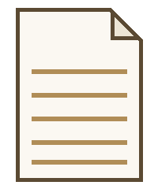
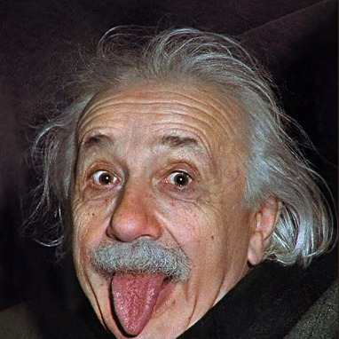
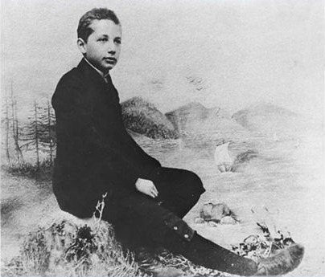
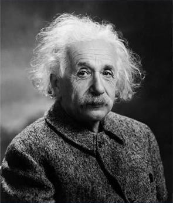
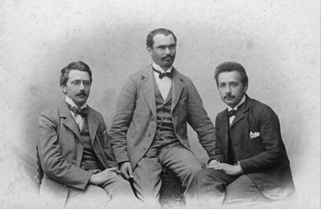
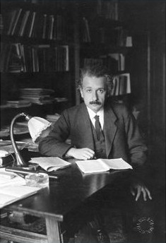
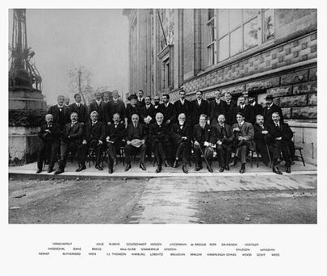
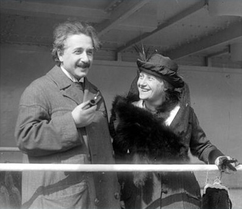

On the Electrodynamics of Moving Bodies
Introduces the special theory of relativity, showing how measurements of space and time depend on the observer's motion.

Welcome
Theoretical Physicist · Nobel Laureate
I'm best known for developing the theory of relativity, starting with a handful of papers written in 1905 and arriving at general relativity a decade later. This page collects my published work, a little about who I am outside of physics, and some photos along the way.
Who I Am
I was born in Ulm, in the German Empire, in 1879. I trained as a physicist and mathematician, and spent several early years working at the Swiss Patent Office in Bern, which is where most of my 1905 papers were written in my spare time. In 1915 I completed the general theory of relativity, describing gravity as the curvature of space and time rather than a simple force. In 1921 I was awarded the Nobel Prize in Physics for my explanation of the photoelectric effect.
Outside of research, I've always believed that imagination is as important as knowledge, and that curiosity has its own reason for existing. I split my time between physics, music, and thinking through problems on long walks.
Summary adapted from Wikipedia.
Published Work
A growing collection of my published papers, starting with four written in a single remarkable year. New entries can be added to this list at any time without changing the layout.

Introduces the special theory of relativity, showing how measurements of space and time depend on the observer's motion.
A short follow-up paper that leads to the relationship between mass and energy, E = mc².
Proposes that light can behave as discrete packets of energy, work that later earned the Nobel Prize in Physics.
Explains Brownian motion as a result of molecules colliding with small particles, offering strong evidence for atomic theory.
Presents the general theory of relativity, describing gravity as the curvature of space and time. This is the work I am most widely known for.
A plain-language explanation of relativity for readers without a background in physics, still in print today.
Known as the EPR paper, it raises foundational questions about quantum entanglement that are still studied today.
New papers like these can be added here any time — the grid just keeps reflowing itself.
The Big Ideas
Four ideas that changed how we understand space, time, matter and light.
The laws of physics look the same to everyone moving at a steady speed, and the speed of light is the same for all of them. Time and distance turn out to depend on the observer.
Mass and energy are two forms of the same thing. A tiny amount of mass holds an enormous amount of energy, which is why the sun shines.
Light arrives in small packets of energy. This idea helped start quantum theory and earned me the Nobel Prize in 1921.
Gravity is not a pull between objects. It is the bending of space and time by mass and energy, which is why light bends around the sun.
My Story
Born on March 14 in the German Empire. My family moved to Munich when I was a baby.
Finished my physics and mathematics teaching diploma at the Zurich Polytechnic.
While working at the Swiss Patent Office, I published papers on relativity, light, atoms and mass-energy.
Completed the field equations describing gravity as curved space and time.
Awarded for my explanation of the photoelectric effect.
Settled in Princeton, New Jersey, and joined the Institute for Advanced Study.
Died in Princeton on April 18 at the age of 76, still working on new ideas.
Recognition
In My Own Words
“Imagination is more important than knowledge.”
“Life is like riding a bicycle. To keep your balance, you must keep moving.”
“The important thing is not to stop questioning.”
Why It Matters
Ideas that began on paper now sit inside everyday technology and modern science.
Satellite clocks run slightly fast or slow because of relativity. Without correcting for it, GPS positions would drift by kilometers every day.
My 1917 work on stimulated emission of light is the basis of the laser, used today in surgery, barcode scanners and fiber-optic internet.
General relativity predicted ripples in space and time. They were first detected directly in 2015, about a century after the theory.
The photoelectric effect, the work that earned my Nobel Prize, explains how light can knock electrons loose and produce electricity.
Outside the Lab
I've played since childhood; Mozart's sonatas are my favorite way to think through a hard problem.
A slow, quiet way to spend an afternoon, even though I'm told I'm not very good at it.
Many of my best ideas, including parts of relativity, came together on a walk rather than at a desk.
Spinoza and Kant in particular; philosophy and physics ask a lot of the same questions.
Did You Know?
My Nobel Prize in 1921 was for the photoelectric effect, not for relativity.
In 1952 I was offered the presidency of Israel, and I politely said no.
I became a citizen of the United States in 1940 and kept my Swiss citizenship too.
I started violin lessons at age six and kept playing for most of my life.
Snapshots
Photos from childhood, the lab, and time with friends, family and colleagues.






Writing
A short piece on how imagining simple situations, like riding alongside a beam of light, can reveal big ideas that equations alone tend to hide.
Some thoughts on staying curious long after school is over, and why asking a question is often more valuable than answering one.
Get in Touch
Have a question about relativity, a paper, or just want to share an idea? Send me a note and I will get back to you.
Email: einstein@example.com